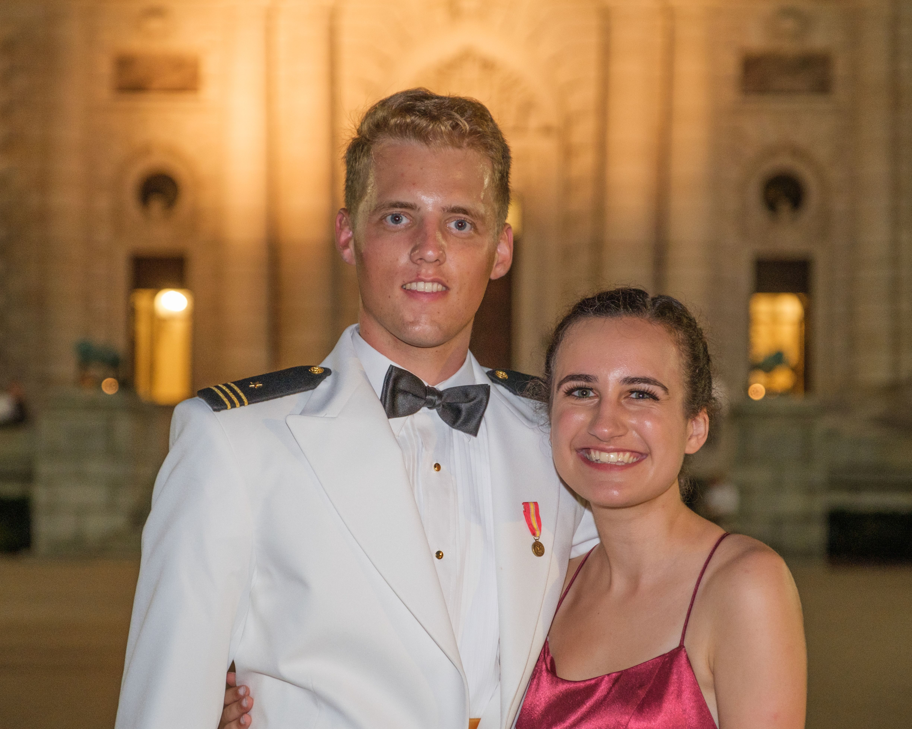

Meeting at 2400 M
On a Friday evening in April 2021, Jack and Lauren met for the first time when their mutual friends brought them together for a small party at the infamous 2400 M apartments in Washington, DC. Jack was attending the nearby Naval Academy and Lauren was at George Washington University. The two talked at the party and Jack had developed a small crush on her. They continued talking at future 2400 M events while Jack developed an even bigger crush. Naturally, he thought to send an Instagram DM as the best way to woo his crush. The DM did not work, but the two still became friends.
Jack and Lauren shared adventures in DC and Annapolis throughout the summer of 2021 with their close friends. As the summer wound down, Lauren suddenly became the one with the crush on him. He asked her to his school's "Ring Dance" in the fall and she agreed to be his date. Jack introduced her as his girlfriend at the dance and the two began dating.
 Months later, Lauren studied abroad in Paris while Jack finished up at the Naval Academy. He was surprisingly given a six month job in DC after graduation, "coincidentally" living at the same apartment and two floors above Lauren. He moved to Pensacola, FL for Navy helicopter flight school while Lauren works in Washington, DC for Leidos.
Months later, Lauren studied abroad in Paris while Jack finished up at the Naval Academy. He was surprisingly given a six month job in DC after graduation, "coincidentally" living at the same apartment and two floors above Lauren. He moved to Pensacola, FL for Navy helicopter flight school while Lauren works in Washington, DC for Leidos.
Proposing at Possum Point
 Jack had always wanted to give Lauren a surprise proposal, but he knew it had to be a foolproof plan due to Lauren's expert detective skills. To accomplish this, he planned the proposal two days after receiving the ring in the mail from Lauren's favorite jeweler in New York. Overwhelmed with excitement, he bought a same-day plane ticket to Annapolis, and with the incredible help from his mom, hired a photographer, developed a backstory, and stole his little brother's car to drive to Washington, DC to pick up Lauren.
Jack had always wanted to give Lauren a surprise proposal, but he knew it had to be a foolproof plan due to Lauren's expert detective skills. To accomplish this, he planned the proposal two days after receiving the ring in the mail from Lauren's favorite jeweler in New York. Overwhelmed with excitement, he bought a same-day plane ticket to Annapolis, and with the incredible help from his mom, hired a photographer, developed a backstory, and stole his little brother's car to drive to Washington, DC to pick up Lauren.
In DC, Jack told Lauren they were going to a fancy party at a mansion and were being picked up at a dock by his parents on a boat (somehow she bought this story). The "dock" was a beautiful inlet at a park in Annapolis called Possum Point. The photographer posed as a mom with her kid, and Lauren was pleasantly surprised after Jack got down on one knee and asked her to marry him. However, she is still upset there was no boat ride to a mansion party.